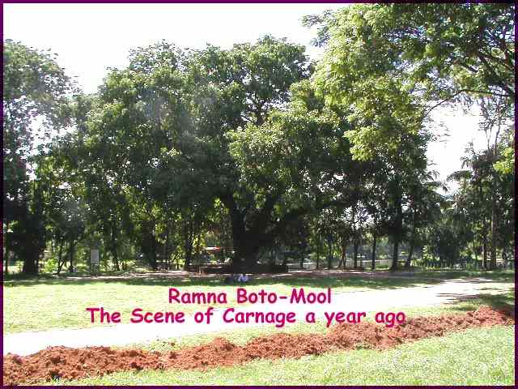
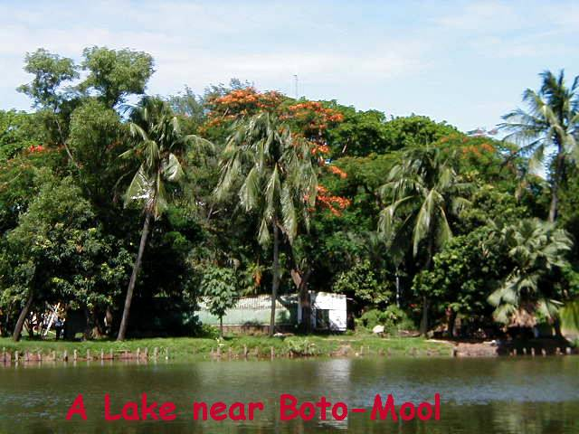

Pahela Baishakh’s carnage site at 'Boto Mool' revisited
By A.H. Jaffor Ullah
Last year’s Pahela Baishakh (Bengali New Year) celebration that took place on April 14, 2001, at Ramna’s Boto-Mool (Foot of the Banyan Tree) was marred by a bomb blast that killed 10 innocent bystanders. It was never ruled out completely whether one of the bombers was killed in the carnage. A year went by but the police investigation was mysteriously incomplete as is the case with other bomb blasts that rocked this nation inhabited by 130 million impoverished people.
Sitting far away from our ancestral
place, Bangladesh, many of us were eager to know this time around whether this
year’s Pahela Baishakh was celebrated without any violence. Most western
news agency such as Associated Press and Reuters have reported that this year’s
celebration had no violence associated with it and hearing the good news we all
heaved a great sigh of relief. Mr. Farid Hossain, an Associated Press writer
stationed in Dhaka wrote as follows on April 14, 2002, describing the origin of
Pahela Baishakh:
“Islamic Bangladesh officially follows the Gregorian calendar and many people celebrate Dec. 31 as the New Year's Eve. But more popular are the Islamic Eid al-Fitr holiday and the Bengali New Year's. Eid is celebrated at the end of the fasting month of Ramadan.
The Bengali New Year's Day was introduced by the 16th century Mogul emperor Akbar, coinciding it with the start of the crop harvest, mainly to facilitate collection of crop tax. In neighboring India and Nepal, the Hindu new year was also being celebrated Sunday.”
Please note carefully that Associate Press story identified our motherland as “Islamic Bangladesh.” This hardly comes as a great surprise after the article Mr. Bertil Lintner wrote on recent developments in Bangladesh vis-à-vis rise in Islamic Fundamentalism. It won’t be too far from now when other western news organization such as Reuters, NY Times, Washington Post, etc., will add the adjective “Islamic” that befits Bangladesh.
Now let me get back to the main topics of this write-up, which is the crime scene of last year’s carnage on Pahela Baishakh. The Ramna Park is really an oasis for the people of Dhaka. This piece of land – hardly 1.5 square mile—is the only greenery left undeveloped. I saw a map of Dhaka in the Internet dating back to 1920s. The map shows this park identifying it as Ramna Race Course. During British Raj before the partition of India, Dhaka’s Ramna Race Course used to house a club for the military. This used to be called Ramna Gymkhana. In the early fifties Dhaka’s inhabitants used to identify the park as Gymkhana Race Course Maidan. On most Sundays, there used to be horse racing going on in the afternoon. It was a legal gambling set up. The Pakistanis never found it wrong to gamble on horses. However, a secularist by the name Sheikh Mujibur Rahman stopped the horse racing sometime in 1972. The Ramna race Course was famous for other reasons. First, it housed the famous Ramna Kali Bari. Unfortunately, one would not find any traces of the famous Kali Bari because the Pakistani military wiped the Mandir and the Ashram from Ramna in March and April of 1971. Ramna Race Course Maidan also served as the venue for Sheikh Mujib’s historic meeting of March 7, 1971. Also, after the independence of Bangladesh India’s Prime Minister Smt. Indira Gandhi came to Dhaka in 1972. The stage Bangladesh built where she stood and gave a public lecture in Ramna Maidan was dubbed ‘The Indira Moncho,’ which was later dismantled during the military rule in Bangladesh.

In short, Ramna Maidan is a historic place. One can find the burial ground of three eminent Bengali politicians (Nazimuddin, Suhrawardy, and Fazlul Huq) on the southwestern corner of the park. Many cultural functions are still hosted in Ramna Maidan. On the northeastern section of the park, one can find many big-sized banyan trees standing next to a big pond. These trees throw down their adventitious roots from the big branches. One of the big banyan tree serves as the venue for Pahela Baishakh’s festivity hosted by Dhaka’s school Chayanaut, which specializes in Rabindra Sangeet (Tagore's Songs). It has become a tradition for the past three decades for Chayanaut Shilpi Ghosti to greet the Bangla New Year at the base of this banyan tree. A wall encircles the base of the tree. In mid April the beating sunrays warm up Bengal quite a bit. Therefore, it makes full sense to gather underneath the canopy of either Banyan (bot), Asottho, Pakur trees (these are similar trees that grow throughout Bengal). Since Dhaka’s Ramna Maidan (Ground) has many banyan trees next to the lake in the northeastern corner, it is an ideal place for mass gathering. Every year Dhaka’s people flock to this site early in the morning to greet the Bangla New Year with Rabindra Sangeet. This has become a part and parcel of Pahela Baishakh celebration. However, things were not right in the year 2001. The entire nation of Bangladesh was rocked that year by the blasting of quite a few homemade powerful bombs that killed many bystanders mostly at the public gathering and musical soirees. Bangladesh folks thought the festivity surrounding Pahela Baishakh would be free from any violence; never mind the blasting of bombs. But how wrong they were. When the program was going on in full swing, bombs were detonated in one corner of the banyan tree. There was some confusion at the sound of the detonation of powerful bomb. When the smoke cleared, nine people lay dead. One person later died in the hospital bringing the casualties to 10 people. It is a sad testament that the inept police force could not guarantee the safeguard of New Year’s celebrants. A year passed by still the case has not gone to the court. The investigation perhaps is not complete. And one simply wonders – why?
Hardly two months after the blast, I visited the place in mid June in a hot summer day. I had to ask some street vendors and a restaurant manager nearby the Boto Mool to show me the exact place where the Pahela Baishakh carnage took place in Bangla Year 1408 (April 14, 2001). There are quite a few big banyan trees nearby; therefore, one can become confused unless someone knowledgeable could point out the right banyan tree. The place was very peaceful. One could lie down at the Boto Mool and take a siesta without even knowing that this innocuous place could have suddenly metamorphosed into a dangerous place by the action of some vile terrorists. There is no question in our mind that those who do not like the free mixing of adult men and women in public appointed these terrorists. We have heard so many times that some Mullahs have passed fatwa on Pahela Baishakh characterizing the event as non-Islamic. They wrongly opined that good Muslims should never patronize such Hindu influenced events.
I could not find any traces of blood or any thing that could remind me that this placid shady-place had become the scene of a carnage in the morning hours of Pahela Baishakh a year ago. Bangalees are very forgetful people. I don’t blame them for their amnesiac mind. Life is rough and tough. There are many other things in life that need due attention. Therefore, killing of a few people at the base of the banyan tree on Pahela Baishakh hardly settles in one’s mind. Therefore, when I saw modern-day Romeos and Juliets sitting nearby, sipping ice cold Pepsi or Fanta engrossed in their own world, it hardly surprised anyone. There is a restaurant near gate at the northeastern side of the park. To reach the Boto Mool it is best to enter via this gate. The restaurant I saw was doing a brisk business. The customers are mostly the college-going kids in pair. They can easily see the site of Pahela Baishakh carnage from this eatery. Nevertheless, that hardly bothers them as I have pointed out earlier. Practicality reigns over emotionalism. The city teenagers need some privacy; the Boto Mool's verdant area provides the space. What more could they ask?

I also found a large pond next to the Boto Mool. It is both picturesque and serene. Dhaka has become very congested over the years. The city has grown 10-folds to about 8 million from 0.8 million in the last thirty years. Most empty plots have vanished already. Therefore, a visit to Ramna Maidan is still a delight. There is this Children’s Park (Shishu Park) where one can see an emaciated amusement park. The place is practically crowded with adults and kids. Thus, Ramna’s Boto Mool still serves the need for romance-seeking youngsters. And they get it all right.
As I was returning from the Boto Mool,
I asked myself – how long Bangalees will remember this carnage? On December 16,
1971, Pakistan’s vile General Niazi surrendered to India’s Lt. General Jagjit
Singh Aurora by placing his revolver on a table right here in Ramna race
Course. How many folks still remember that seminal event of Bangladesh's
history? Not many. Bangladesh voters have elected some Islamists in the last
year’s (2001) general election to represent them in the legislative assembly.
Two of them are now ministers in Khaleda Zia’s cabinet. But it hardly matters
that many folks who supported the brutal Pakistani regime are now holding power
in Bangladesh. As I have alluded to earlier, in Bangladesh, practicality takes
precedence over emotionalism. In a nation where folks have to work very hard to
secure two square meals a day, emotionalism, sentimentality, emotiveness, etc.,
have lesser value. In about a decade or so, there will be no mention of
Pahela Baishakh massacre at the Boto Mool. Teenagers rushed by the
desire to meet theirs loved one will still flock to the Boto Mool or
nearby places. Perhaps they will sip the ice-cold pop soda in the summer days
and glanced at their lovers' face with a bleary eye while forgetting all the
while that they are sitting right on the spot where 10 people had to die
needlessly to greet the Bangla New Year Pahela Baishakh on April 14,
2001.
----------------------
A.H. Jaffor Ullah writes from New Orleans. His e-mail address is:
Jaffor@netscape.net
==========================================================
The article is kept at www.mukto-mona.com